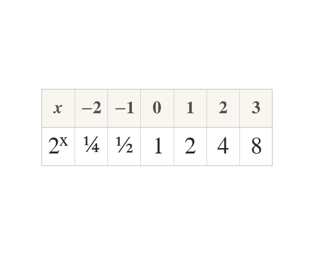
The same factor each step
In each step of in doubles Negative values of give fractions, so is always positive.
Exponential functions model anything that grows or decays by the same factor in equal steps of time. The base whose graph has a gradient equal to its height, is the base used for modelling in and is undone by logarithms from
Work down the page at your own pace. Write every answer in your book first, then click to check it.
Read each card, then follow the worked examples one step at a time.

In each step of in doubles Negative values of give fractions, so is always positive.
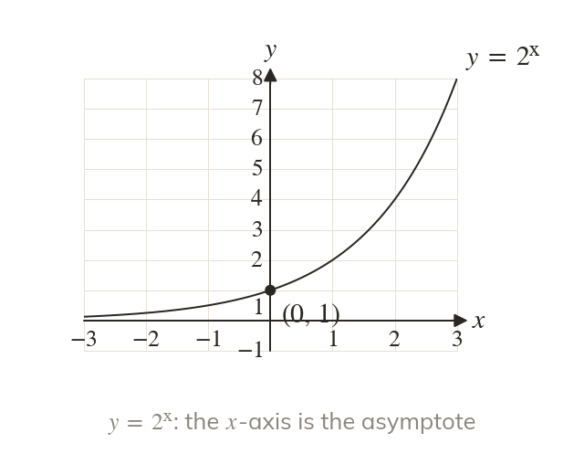
Every graph passes through because
It stays above the x-axis, which is its asymptote.
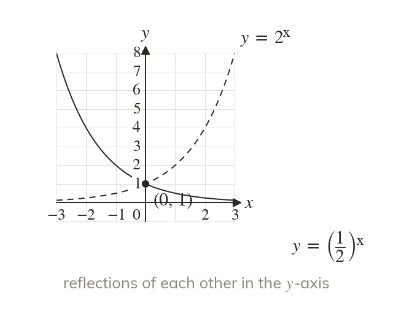
When the graph increases, and when it decreases. is the reflection of in the y-axis.
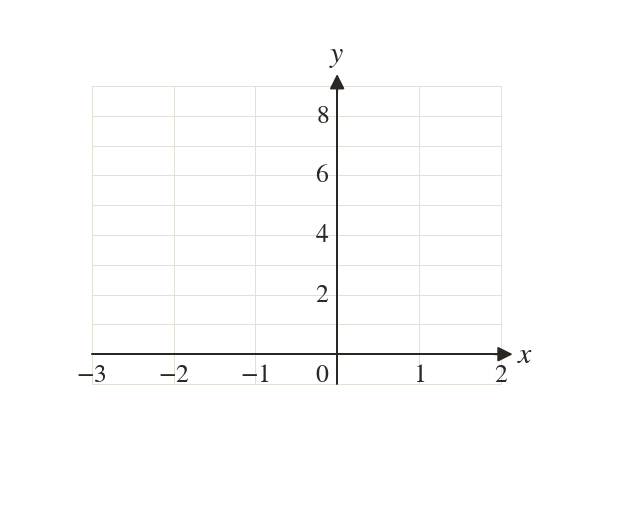
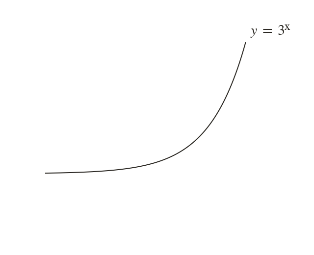
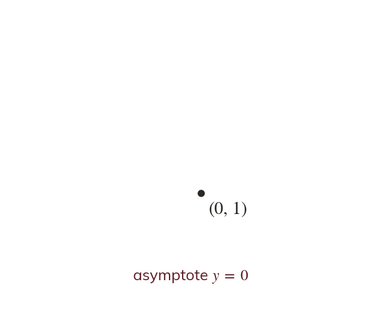
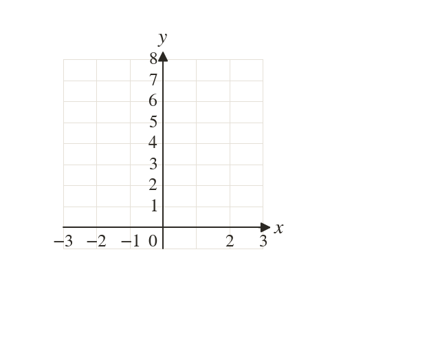
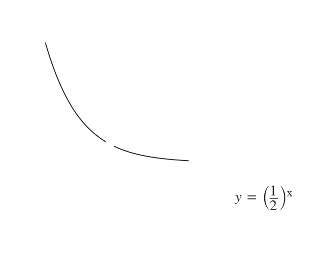
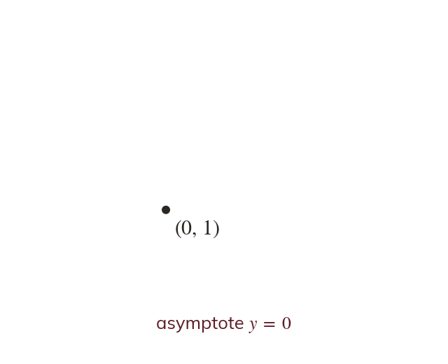
Pick an answer. If it's wrong, the feedback tells you which mistake it was.
Write the blanks in your book first, then tap each one to check.
Read each card, then follow the worked examples one step at a time.
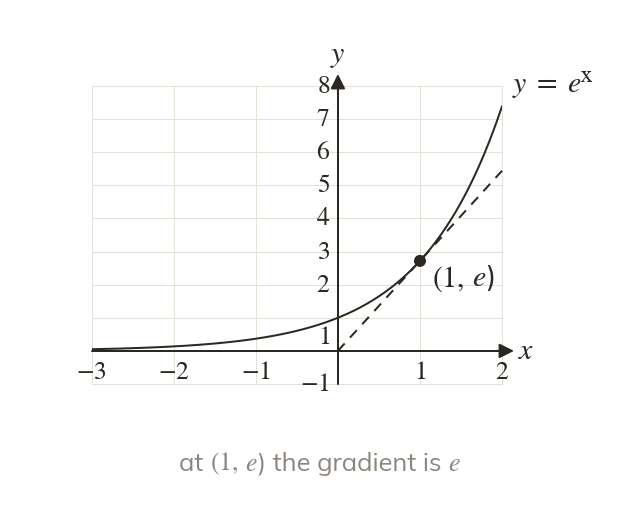
The gradient of is always a constant times For the base that constant is so the gradient of at any point equals its y-value.
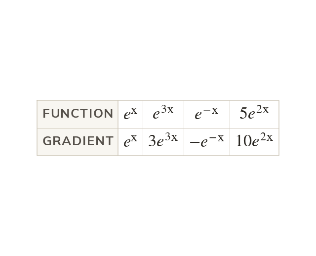
The gradient of is So has gradient and has gradient which is always negative.
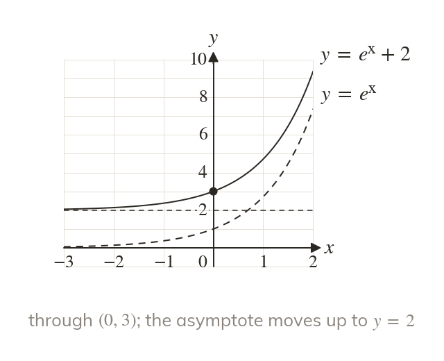
is moved up so it meets the y-axis at and its asymptote moves up to
The asymptote moves with the graph.
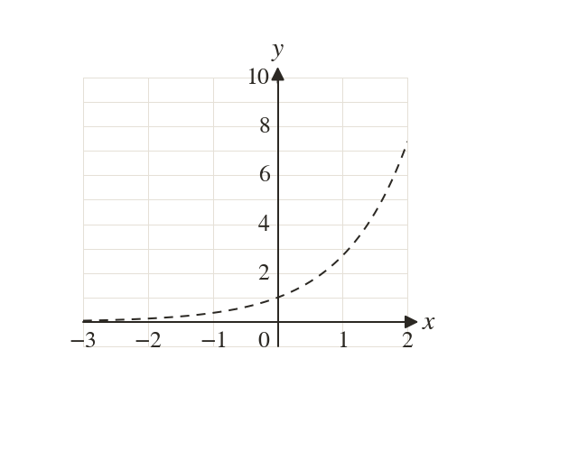
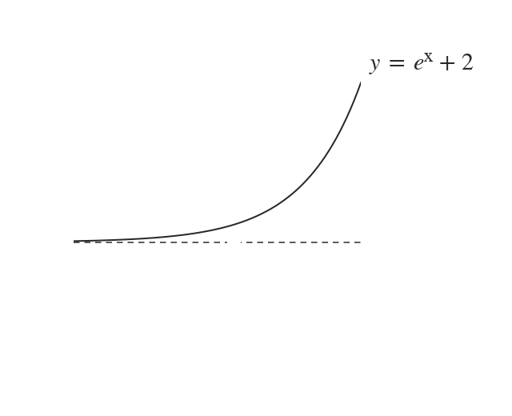
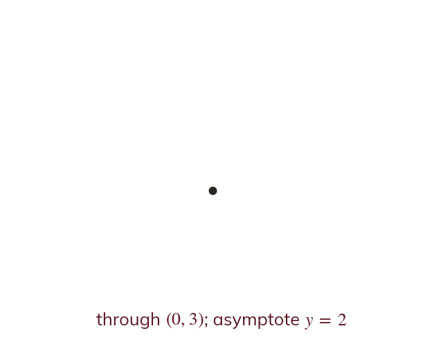
Pick an answer. If it's wrong, the feedback tells you which mistake it was.
Write the blanks in your book first, then tap each one to check.
Finished? Next lesson: 12.P14.3 Exponential Modelling.
For each skill, tap the one that is true for you today. Your Revise pages start with anything you mark Not yet.
Your ratings are saved on this device only.
Log in, then search for a code to practise that skill.